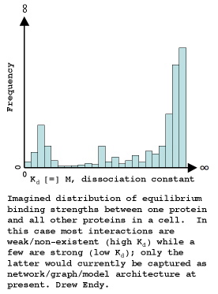

[Date Prev][Date Next][Thread Prev][Thread Next][Date Index][Thread Index]
[sbml-discuss] thoughts on models and and model parameters
Just some thoughts on models and model parameters...
(1) It would be good, at some point not too far in the future, to be
able to represent (a) uncertainty in parameter values and (b) a known
distribution of values for a particular parameter. Had a post couple
months ago with references/examples.
(2) Unlike many other types of physical systems that have a hard layout
and connectivity map, biological systems seem likely to, in part, have
more of an "amorphous" architecture. One thing this might impact is
the entire notion of network and system layout. For example, one
Protein likely doesn't only interact with one to three other proteins,
but many many proteins across a range of interaction strengths (see
attached figure; also available here:
http://web.mit.edu/endy/www/scraps/KdDistro2.jpg).
So, for me at least, I don't see the model and its parameter values as
being separable at all. It may be a long term issue though (i.e.,
return to in 2010) and something that will be more relevant to protein
interaction-based networks versus metabolic networks et cetera.
best,
-drew

{kind=link}